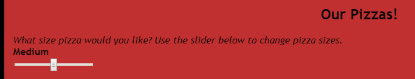
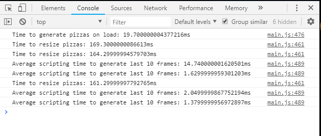

The Assignment
One assignment we recieved as part of the Udacity Front End Web Development course was to take a poorly optimized web page and improve the page performance.
How to compare versions
The links below will open an optimized or an un-optimized version of pizza website.
To comparing the performance of the websites, press the F12 key immediately after the pizza site loads to bring up your browser's console. Be sure the Console tab in the console is selected, as opposed to Element or Network data.
While the console is displayed, adjust the pizza size slider to small, medium and large. This slider uses javascript to resize many pizza images displayed on the page.

The console will output how many milliseconds the page is using to display data.

The original un-optimized page will be close to the range of 1.0 - 1.5 (or more) milliseconds per 10 frames while scrolling, and somewhere over 150 miiliseconds to change pizza size.
The optimized site should display times of about 0.3 to .6 milliseconds for scrolling, and about .4 milliseconds for changing pizza size.
Speed was increased by optimizing loops and variables in the page's javascript. Other items optimized for performance were image sizes.